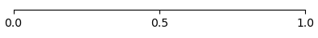
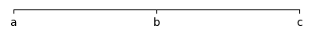
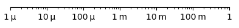
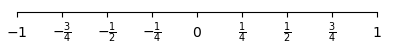
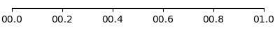
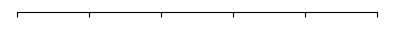
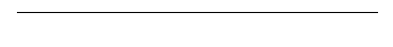
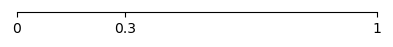
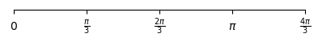

Module plottools.ticks
Setting tick locations and formats.
Axes member functions
set_xticks_delta(): set interval between major xticks.set_yticks_delta(): set interval between major yticks. set_minor_xticks_delta(): set interval between minor xticks.set_minor_yticks_delta(): set interval between minor yticks.set_xticks_log(): set major ticks on a logarithmic x-axis.set_yticks_log(): set major ticks on a logarithmic y-axis.set_minor_xticks_log(): set minor ticks on a logarithmic x-axis.set_minor_yticks_log(): set minor ticks on a logarithmic y-axis.set_xticks_fixed(): set custom xticks at fixed positions.set_yticks_fixed(): set custom yticks at fixed positions. set_xticks_prefix(): format xticks with SI prefixes.set_yticks_prefix(): format yticks with SI prefixes. set_xticks_fracs(): format and place xticks as fractions.set_yticks_fracs(): format and place xticks as fractions. set_xticks_pifracs(): format and place xticks as mutiples of pi.set_yticks_pifracs(): format and place yticks as mutiples of pi.
set_xticks_format(): format xticks according to formatter string.set_yticks_format(): format yticks according to formatter string. set_xticks_blank(): draw xticks without labeling them.set_yticks_blank(): draw yticks without labeling them. set_xticks_off(): do not draw and label any xticks.set_yticks_off(): do not draw and label any yticks. set_minor_xticks_off(): do not draw any minor xticks.set_minor_yticks_off(): do not draw any minor yticks.set_minor_xticks(): draw minor xticks at a specified number of intervals.set_minor_yticks(): draw minor yticks at a specified number of intervals.
Settings
ticks_params(): set default ticks appearance.
Install/uninstall ticks functions
You usually do not need to call these functions. Upon loading the ticks
module, install_ticks() is called automatically.
install_ticks(): install functions of the ticks module in matplotlib.uninstall_ticks(): uninstall all code of the ticks module from matplotlib.
Functions
def set_xticks_delta(ax, delta)-
Set interval between major xticks.
Parameters
ax:matplotlib axes- Axes on which the xticks are set.
delta:float- Interval between xticks.
Examples
ax.set_xticks_delta(0.5) def set_yticks_delta(ax, delta)-
Set interval between major yticks.
Parameters
ax:matplotlib axes- Axes on which the yticks are set.
delta:float- Interval between yticks.
See Also
def set_minor_xticks_delta(ax, delta)-
Set interval between minor xticks.
Parameters
ax:matplotlib axes- Axes on which the minor xticks are set.
delta:float- Interval between minor xticks.
Examples
ax.set_minor_xticks_delta(0.5)See Also
def set_minor_yticks_delta(ax, delta)-
Set interval between minor yticks.
Parameters
ax:matplotlib axes- Axes on which the minor yticks are set.
delta:float- Interval between minor yticks.
See Also
def set_xticks_log(ax, subs=(1.0,), numticks=None)-
Set major ticks on a logarithmic x-axis.
Parameters
ax:matplotlib axes- Axes on which the xticks are set.
subs:None, 'auto', 'all',orsequenceoffloats- Multiples of integer powers of ten, where to place major ticks.
numticks:int- Maximum number of ticks placed on the axis.
def set_yticks_log(ax, subs=(1.0,), numticks=None)-
Set major ticks on a logarithmic y-axis.
Parameters
ax:matplotlib axes- Axes on which the yticks are set.
subs:None, 'auto', 'all',orsequenceoffloats- Multiples of integer powers of ten, where to place major ticks.
numticks:int- Maximum number of ticks placed on the axis.
See Also
def set_minor_xticks_log(ax, subs=(1.0,), numticks=None)-
Set minor ticks on a logarithmic x-axis.
Also switch of minor tick labels.
Parameters
ax:matplotlib axes- Axes on which the minor xticks are set.
subs:None, 'auto', 'all',orsequenceoffloats- Multiples of integer powers of ten, where to place minor ticks.
numticks:int- Maximum number of minor ticks placed on the axis.
See Also
def set_minor_yticks_log(ax, subs=(1.0,), numticks=None)-
Set minor ticks on a logarithmic y-axis.
Also switch of minor tick labels.
Parameters
ax:matplotlib axes- Axes on which the minor yticks are set.
subs:None, 'auto', 'all',orsequenceoffloats- Multiples of integer powers of ten, where to place minor ticks.
numticks:int- Maximum number of minor ticks placed on the axis.
See Also
def set_xticks_fixed(ax, locs, labels='%g')-
Set custom xticks at fixed positions.
Parameters
ax:matplotlib axes- Axes on which the xticks are set.
locs:listoffloats- Locations of xticks.
labels:stringorlistofstrings- Either a format string (e.g. '%.1f') or a list of labels
for each tick position in
locs.
Notes
On logarithmic axis you may want to turn off minor ticks, e.g. via
ax.set_minor_xticks_off().Examples
Fixed locations:
ax.set_xticks_fixed((0, 0.3, 1))
Fixed locations and labels:
ax.set_xticks_fixed((0, 0.5, 1), ('a', 'b', 'c')) def set_yticks_fixed(ax, locs, labels='%g')-
Set custom yticks at fixed positions.
Parameters
ax:matplotlib axes- Axes on which the yticks are set.
locs:listoffloats- Locations of yticks.
labels:stringorlistofstrings- Either a format string (e.g. '%.1f') or a list of labels
for each tick position in
locs.
Notes
On logarithmic axis you may want to turn off minor ticks, e.g. via
ax.set_minor_yticks_off().See Also
def prefix_formatter(x, pos)-
Function formatter used by
set_xticks_prefix()andset_yticks_prefix(). def set_xticks_prefix(ax)-
Format xticks with SI prefixes.
Ensures ticks to be numbers between 1 and 999 by appending necessary SI prefixes. That is, numbers between 1 and 999 are not modified and are formatted with '%g'. Numbers between 1000 and 999999 are divdided by 1000 and get an 'k' appended, e.g. 10000 -> '10k'. Numbers between 0.001 and 0.999 are multiplied with 1000 and get an 'm' appended, e.g. 0.02 -> '20m'. And so on.
Parameters
ax:matplotlib axes- Axes on which the xticks are set.
Examples
ax.set_xscale('log') ax.set_xlim(1e-6, 1e0) ax.set_xticks_prefix() def set_yticks_prefix(ax)-
Format yticks with SI prefixes.
Ensures ticks to be numbers between 1 and 999 by appending necessary SI prefixes. That is, numbers between 1 and 999 are not modified and are formatted with '%g'. Numbers between 1000 and 999999 are divdided by 1000 and get an 'k' appended, e.g. 10000 -> '10k'. Numbers between 0.001 and 0.999 are multiplied with 1000 and get an 'm' appended, e.g. 0.02 -> '20m'. And so on.
Parameters
ax:matplotlib axes- Axes on which the yticks are set.
See Also
def fraction_formatter(denominator, factor=1, fstring='', ontop=False)-
Function formatter used by
set_xticks_fracs()andset_yticks_fracs().Parameters
denominator:int- Ticks are located at multiples of factor/denominator.
factor:float- Tick values are interpreted as multiples of factor, i.e. they are divided by factor, before turning them into fractions.
fstring:string- Textual representation of factor that is appended to the fractions.
ontop:boolean- Place fstring into the numerator instead of after the fraction.
Returns
Function formatter.
def set_xticks_fracs(ax, denominator, factor=1, fstring='', ontop=False)-
Format and place xticks as fractions.
Parameters
ax:matplotlib axes- Axes on which the xticks are set.
denominator:int- XTicks are located at multiples of factor/denominator.
factor:float- Tick values are interpreted as multiples of factor, i.e. they are divided by factor, before turning them into fractions.
fstring:string- Textual representation of factor that is appended to the fractions.
ontop:boolean- Place fstring into the numerator instead of after the fraction.
Examples
ax.set_xlim(-1, 1) ax.set_xticks_fracs(4) def set_yticks_fracs(ax, denominator, factor=1, fstring='', ontop=False)-
Format and place xticks as fractions.
Parameters
ax:matplotlib axes- Axes on which the xticks are set.
denominator:int- YTicks are located at multiples of factor/denominator.
factor:float- Tick values are interpreted as multiples of factor, i.e. they are divided by factor, before turning them into fractions.
fstring:string- Textual representation of factor that is appended to the fractions.
ontop:boolean- Place fstring into the numerator instead of after the fraction.
See Also
def set_xticks_pifracs(ax, denominator, ontop=False)-
Format and place xticks as mutiples of pi.
Parameters
ax:matplotlib axes- Axes on which the xticks are set.
denominator:int- XTicks are located at multiples of pi/denominator.
ontop:boolean- Place fstring into the numerator instead of after the fraction.
Examples
ax.set_xlim(-np.pi, 2*np.pi) ax.set_xticks_pifracs(2)Pi in the nominator:
ax.set_xlim(0, 4*np.pi/3) ax.set_xticks_pifracs(3, True)
def set_yticks_pifracs(ax, denominator, ontop=False)-
Format and place yticks as mutiples of pi.
Parameters
ax:matplotlib axes- Axes on which the xticks are set.
denominator:int- YTicks are located at multiples of pi/denominator.
ontop:boolean- Place fstring into the numerator instead of after the fraction.
See Also
def set_xticks_format(ax, fs)-
Format xticks according to formatter string.
Parameters
ax:matplotlib axes- Axes on which the xticks are set.
fs:string- Format string used to format xticks.
Examples
ax.set_xticks_format('%04.1f') def set_yticks_format(ax, fs)-
Format yticks according to formatter string.
Parameters
ax:matplotlib axes- Axes on which the yticks are set.
fs:string- Format string used to format xticks.
See Also
def set_xticks_blank(ax)-
Draw xticks without labeling them.
Parameters
ax:matplotlib axes- Axes on which the xticks are set.
See Also
Examples
ax.set_xticks_blank() def set_yticks_blank(ax)-
Draw yticks without labeling them.
Parameters
ax:matplotlib axes- Axes on which the yticks are set.
See Also
def set_xticks_off(ax)-
Do not draw and label any xticks.
Parameters
ax:matplotlib axes- Axes on which the xticks are set.
Examples
ax.set_xticks_off() def set_yticks_off(ax)-
Do not draw and label any yticks.
Parameters
ax:matplotlib axes- Axes on which the yticks are set.
See Also
def set_minor_xticks_off(ax)-
Do not draw any minor xticks.
Parameters
ax:matplotlib axes- Axes on which the minor xticks are set.
See Also
def set_minor_yticks_off(ax)-
Do not draw any minor yticks.
Parameters
ax:matplotlib axes- Axes on which the minor yticks are set.
See Also
def set_minor_xticks(ax, n=None)-
Draw minor xticks at a specified number of intervals.
Parameters
ax:matplotlib axes- Axes on which the minor xticks are set.
n:int- Number of intervals between major ticks.
See Also
def set_minor_yticks(ax, n=None)-
Draw minor yticks at a specified number of intervals.
Parameters
ax:matplotlib axes- Axes on which the minor yticks are set.
n:int- Number of intervals between major ticks.
See Also
def ticks_params(xtick_minor=None, ytick_minor='same', xtick_dir=None, ytick_dir='same', xtick_size=None, ytick_size='same', minor_tick_frac=0.6, xtick_major_width=None, ytick_major_width='same', xtick_minor_width=None, ytick_minor_width='same', xtick_major_pad=None, ytick_major_pad='same', xtick_minor_pad=None, ytick_minor_pad='same', xtick_alignment=None, ytick_alignment=None, xtick_color='axes', ytick_color='same', xtick_labelcolor='ticks', ytick_labelcolor='same', xtick_labelsize=None, ytick_labelsize='same')-
Set default ticks appearance.
Only parameters that are not
Noneare updated.Arguments for ytick parameters with default 'same', are set to the respective xtick parameter, if that one is supplied. If you want to set the xtick parameter, but not the ytick parameter, you need to explicitly set the ytick parameter to
None.Call this function before you create any matplotlib figure.
Parameters
xtick_minor:bool- Show minor xticks.
Sets rcParams
xtick.minor.visible. ytick_minor:bool- Show minor yticks. If 'same' set to the value of
ytick_minor. Sets rcParamsytick.minor.visible. xtick_dir:{'in', 'out', 'inout'}- Direction of xticks.
Sets rcParams
xtick.direction. ytick_dir:{'in', 'out', 'inout', 'same'}- Direction of yticks. If 'same' set to the value of
xtick_dir. Sets rcParamsytick.direction. xtick_size:float- Length of major xticks marks in points.
Sets rcParams
xtick.major.sizeandxtick.minor.size. The minor tick size is multiplied withminor_tick_frac. ytick_size:floator'same'- Length of major yticks in points. If 'same' set to the value of
xtick_size. Sets rcParamsytick.major.sizeandytick.minor.size. The minor ytick size is multiplied withminor_tick_frac. minor_tick_frac:float- Length of minor ticks relative to major tick size.
xtick_major_width:float- Width of major xticks in points.
Sets rcParams
xtick.major.width. ytick_major_width:floator'same'- Width of major yticks in points. If 'same' set to the value of
xtick_major_width. Sets rcParamsytick.major.width. xtick_minor_width:float- Width of minor xticks in points.
Sets rcParams
xtick.minor.width. ytick_minor_width:floator'same'- Width of minor yticks in points. If 'same' set to the value of
ytick_minor_width. Sets rcParamsytick.minor.width. xtick_major_pad:float- Distance of major xtick labels from major xticks in points.
Sets rcParams
xtick.major.pad. ytick_major_pad:floator'same'- Distance of major ytick labels from major yticks in points.
If 'same' set to the value of
xtick_major_pad. Sets rcParamsytick.major.pad. xtick_minor_pad:floator'same'- Distance of minor xtick labels from minor xticks in points.
If 'same' set to the value of
xtick_major_pad. Sets rcParamsxtick.minor.pad. ytick_minor_pad:floator'same'- Distance of minor ytick labels from minor yticks in points.
If 'same' set to the value of
xtick_minor_pad. Sets rcParamsytick.minor.pad. xtick_alignment:{'center', 'left', 'right'}- Alignment of xtick labels relative to xticks.
Sets rcParams
xtick.alignment. ytick_alignment:{'center', 'top', 'bottom', 'baseline', 'center_baseline'}- Alignment of ytick labels relative to yticks.
Sets rcParams
ytick.alignment. xtick_color:matplotlib coloror'axes'- Color of xticks. If 'axes' set to color of axes (rcParam
axes.edgecolor). Sets rcParamxtick.color. ytick_color:matplotlib color, 'axes',or'same'- Color of yticks. If 'axes' set to color of axes (rcParam
axes.edgecolor). If 'same' set to the value ofxtick_color. Sets rcParamytick.color. xtick_labelcolor:matplotlib color, 'axes'or'ticks'- Color of xtick labels. If 'axes' set to color of axes (rcParam
axes.edgecolor). If 'ticks' set to color of xticks (rcParamxtick.color). Sets rcParamxtick.labelcolor. ytick_labelcolor:matplotlib color, 'axes', 'ticks',or'same'- Color of ytick labels. If 'axes' set to color of axes (rcParam
axes.edgecolor). If 'ticks' set to color of yticks (rcParamytick.color). If 'same' set to the value ofxtick_labelcolor. Sets rcParamytick.labelcolor. xtick_labelsize:float- Font size of xtick labels. Sets rcParam
xtick.labelsize. ytick_labelsize:floator'same'- Font size of ytick labels. If 'same' set to the value of
xtick_labelsize. Sets rcParamytick.labelsize.
def install_ticks()-
Install ticks functions on matplotlib axes.
This function is also called automatically upon importing the module.
See Also
def uninstall_ticks()-
Uninstall ticks functions from matplotlib axes.
Call this function to disable anything that was installed by
install_ticks().See Also
def demo()-
Run a demonstration of the ticks module.